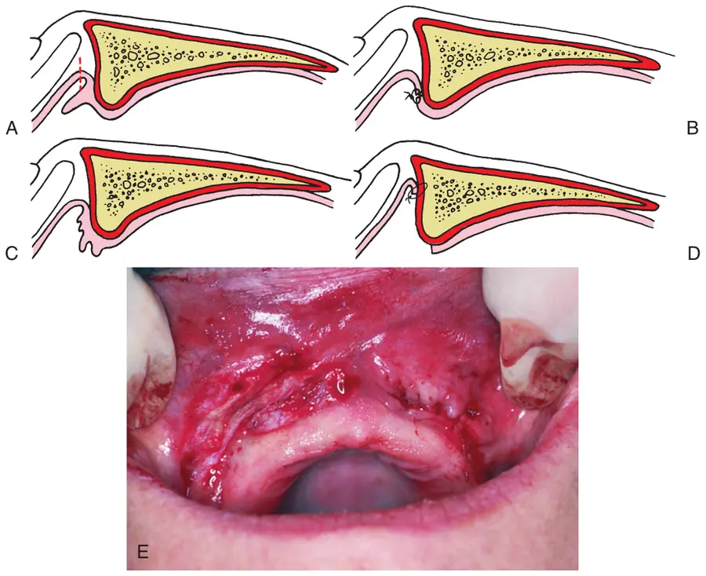
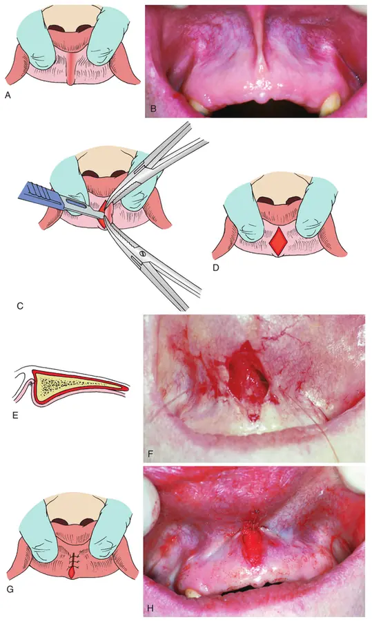

نسخه استخراجشده؛ ترجمه یا تأیید علمی انجام نشده است. وضعیت: captured
ناهنجاریهای بافت نرم در نواحی حامل دنچر و بافتهای محیطی، سه دستهاند: بافت فیبروز یا هایپرموبایل بیشازحد، ضایعات التهابی مانند هایپرپلازی فیبروز التهابی وستیبول و هایپرپلازی پاپیلاری التهابی کام، و اتصالات عضلانی و فرنال غیرطبیعی.

و یک الگوی تکرارشونده: بهجز ضایعات پاتولوژیک و التهابی، بسیاری از این وضعیتها وقتی بیمار دندان کامل دارد مشکلی نمیسازند. ولی وقتی از دست رفتن دندانها بازسازی پروتزی را ضروری میکند، همان ساختارها به مانع بدل میشوند.
و همین دربارهی ساختارها هم صادق است: ساختارهای دهانی مانند اتصالات فرنال و اگزوستوزها وقتی دندانها حاضرند اهمیتی ندارند، ولی پس از از دست رفتن دندان به موانعی برای ساخت مناسب دستگاه پروتزی بدل میشوند.
کاهش بافت نرم توبروزیته: انفیلتراسیون بیحسی موضعی در ناحیهی خلفی ماگزیلا برای کاهش توبروزیته کافی است.
و تکنیک: برش بیضوی اولیه روی توبروزیته در ناحیهی نیازمند کاهش زده میشود، سپس فلپهای باکال و پالاتال زیرکاوی میشوند تا کانتور بافت نرم مناسب و بستن بدون کشش فراهم گردد، و در پایان بستن بافت نرم انجام میگیرد.
مازاد بافت نرم پالاتال جانبی: مازاد بافت نرم روی سطح جانبی طاق کام اغلب با ساخت مناسب دنچر تداخل میکند. و مانند ناهنجاریهای استخوانی این ناحیه، هایپرتروفی بافت نرم اغلب طاق کام را باریک میکند و آندرکاتهای خفیفی میسازد که با ساخت و نشاندن دنچر تداخل مییابند.
و تکنیک پیشنهادی: رزکسیون زیرمخاطی بافت مازاد، به روشی شبیه کاهش بافت نرم توبروزیته که پیشتر توصیف شد.
هایپرپلازی فیبروز التهابی — و دو نام دیگرش: اپولیس فیشوراتوم یا فیبروز دنچر نامیده میشود، و بزرگشدگی هایپرپلاستیک منتشر مخاط و بافت فیبروز در ناحیهی ریج آلوئولار و وستیبول است، که بیشتر اوقات از دنچرهای نامناسب ناشی میشود.
و حالا مهمترین تصمیم درمانی این ضایعه — و به زمان بستگی دارد:
پس قاعده روشن است: زودهنگام و کمفیبروز → لاینر نرم؛ دیرهنگام و فیبروزشده → جراحی.
اتصالات فرنال لبیال چیستند؟ نوارهای نازکی از بافت فیبروز پوشیده با مخاط، که از لب و گونه تا پریوست آلوئولار امتداد مییابند.

و سطح اتصالشان بسیار متغیر است: میتواند از ارتفاع وستیبول تا ستیغ ریج آلوئولار و حتی تا ناحیهی پاپیلای انسیزیو در ماگزیلای قدامی متفاوت باشد.
و همان الگوی همیشگی: بهجز فرنوم لبیال خط وسط همراه با دیاستم، اتصالات فرنال عموماً وقتی دندانها سالماند مشکلی نمیسازند.
و یک بحث زنده در ارتودنسی — زمانبندی برداشتن فرنوم: در موارد اتصال فرنال در ناحیهی دیاستم در بیمار تحت درمان ارتودنسی، بحثی دربارهی زمان برداشتن فرنوم وجود دارد:
و چرا فرنوم برای دنچر مشکلساز است؟ ساخت دنچر میتواند وقتی جای دادن اتصال فرنال ضروری است پیچیده شود. و حرکت بافت نرم مجاور فرنوم میتواند ناراحتی و زخم ایجاد کند، با سیل محیطی تداخل یابد، و دنچر را جابهجا سازد.
و چهار تکنیک مؤثر برداشتن اتصالات فرنال:
و قاعدهی انتخاب میان اینها — بر پایهی پهنای نوار:
پس تصمیم ساده است: نوار باریک → برداشتن ساده یا Z-plasty؛ پایهی پهن → وستیبولوپلاستی موضعی.